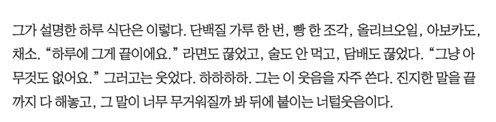
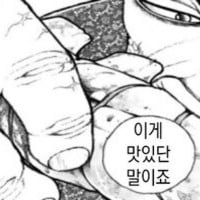

감량할때 식단이겠지....?

감량할때 식단이겠지....?
너에게도 일급 백만원쯤 주면 쌉가능임.
저렇게 먹고 하루에 10-20 킬로 뛰어야 살이빠지더라
평소에도 저렇게 먹으면 탈날듯 ㅋㅋㅋ
다이어트식단이겠지
나도 이번에 담배 끊었는데....
담배 끊으니까 입맛이 너무 돌아 미치겟어
위고비 꼽아. 확실하게 끊을 수 있어.
저용량은 요즘 싸
임신하느라 담배 끊었는데 출산해도 입맛 안 돌고 자연금연 됨. 임신출산ㄱㄱ
이게 보통이긴하더라 임신하니까 진짜 그날부터 칼같이 담배 끊어내는 지인 몇명봄
안될년들도 있긴하던데 ㅋㅋㅋ
남자는 장내임신 하면 되나요?
좋은현상이야 골고루잘먹고 힘내서 계속금연해
평소에 저렇게 먹으면 영양실조 걸리지 작품 들어갈때 하는거같음
단기간도 저렇게 못 할 거 같음...... 하루정도나 이틀 정도 가능하려나
시즌일때겠지
저렇게 생긴 사람도 관리하는데 난 왜 안하지...
??? : 나도 저렇게 생겼으면 열심히 관리했을거야
???: 나아질 거라는 희망이 있었다면 분명히 조치를 취했을 거야
???:개붕이인데 관리도안한다고?
어차피 해도 저렇게 못되니까 괜찮
쟨 저러면 입금 되니까
1000칼로리도 안될거 같은데
괜찮나?;;
이준혁 : 안괜찮습니다. 하하하하
그는 이 웃음을 자주 쓴다
진짜 잘생겼다
고무줄인간이라 폭식할땐 ㄹㅇ 어마어마하게 먹는 사람임
관리할때 식단이겠지
저사람 침착맨 나왔을때랑 드라마랑 똑같아서 몰입 잘되더라
범죄도시나왔을땐 진짜 몸 개 커보였는데
범죄도시 찍을때는 증량해야해서 피자랑 이런거 많이 드셨다는데 그렇게 행복했다고 하더라 ㅋㅋㅋㅋㅋㅋㅋㅋㅋㅋ
관리하시느라 그런듯
감량때겠지 계속 저렇게먹으면 그냥 뼈말라됨
올리브오일은 저기서 어떻게 먹는거임 그냥 기름을 들이켜?
빵 찍어먹지 않을까?
ㅇㅇ그냥 쌩으로 한스푼 먹는거임 식단할 때 지방채우려고 저렇게 먹는 사람들 많음
아님 다른데다 곁들여먹어도 상관없고
맛없으면 땅콩버터로 대체 ㄱㄱ
저렇게 먹는데 탈모가 안 오다니..
그래서 그는 먹지 않는다. 그가 앉은 자리에서 피자 라지 사이즈 다섯 판은 거뜬히 해치울 정도의 대식가 성향은 익히 잘 알려져 있다. 과거 술에 취했을 때 라면 7봉지를 끓여 먹은 적도 있었던 그다. 그랬던 그가 정확히는 하루 반 끼를 먹는다. “저는 하루 세 끼 먹으면 무조건 ‘범죄도시’(영화 ‘범죄도시’ 속 캐릭터)예요. 엄청 커지는 스타일이거든요.”
그가 설명한 하루 식단은 이렇다. 단백질 가루 한 번, 빵 한 조각, 올리브오일, 아보카도, 채소. “하루에 그게 끝이에요.” 라면도 끊었고, 술도 안 먹고, 담배도 끊었다. “그냥 아무것도 없어요.” 그러고는 웃었다. 하하하하. 그는 이 웃음을 자주 쓴다. 진지한 말을 끝까지 다 해놓고, 그 말이 너무 무거워질까 봐 뒤에 붙이는 너털웃음이다.
다음편은 근육량늘려서 싸움하는 드라마로 나올꺼 같다
인터뷰 전문 보니까 시즌 식단 맞음ㅋㅋㅋ
비시즌에는 라면도 서너개씩 먹고 피자도 한판 다 먹는다는듯.

")
대식가랑 조금만 먹어도 살찌는 체질인 사람들이 배우 연예인 하는거 대단한 것 같음 ...
84년생 ㄷㄷ
점심때 서브웨이에서 딱 저렇게만 먹고 나는 저녁을 먹는데
하루에 저거만 먹으면 엄청 배고프겠네
182cm 70kg ㄷㄷ
범죄도시에 나올땐 벌크업해서 엄청 크게 나오드만
공팀장 인생 배역이다 너무 잘어울려
저걸 버틸수가 있는게 대단하네.. 살이 빠지긴 할껴 근육도 머리카락도